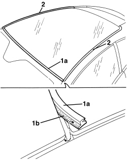
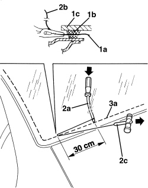
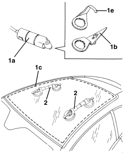
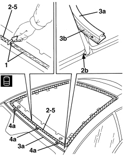
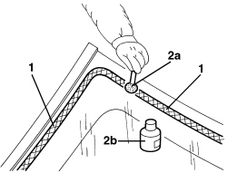
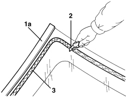
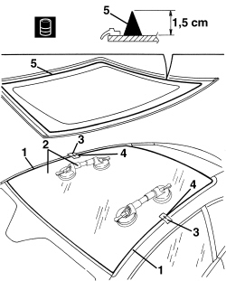

7030L10 TRANSPARENT ROOF PANEL - R.R.
- Path
- Procedures > 70 FITTINGS > 7030 SUN ROOF/GLASS PANEL > 7030L TRANSPARENT ROOF PANEL > 7030L10 TRANSPARENT ROOF PANEL - R.R.
- Kind
- repair procedure (removal / refitting; the operation number is the code)
- Applies to
- all engines; all production periods
- Interactive page
- https://sloeber94.github.io/elrnDB-aBrrSpdr/en/#/946002578
Applies to: all engines; all production periods
 Removing
Removing
 Refitting
Refitting- Remove the rear parcel shelf.
Op. 7040G30 BOOT LIGHT BULB HOLDER - R.R.
- Work on both sides of the vehicle.
Op. 7050A22 REAR SEAT CUSHION - R+R
Op. 7040H42 REAR PILLAR TRIM (ONE), LEFT OR RIGHT- R.R
Op. 7040H38 CENTRE PILLAR UPPER ELEMENT (ONE), LEFT OR RIGHT - R.R
Op. 7040H30 FRONT PILLAR TRIM (ONE), LEFT OR RIGHT - R.R.
Op. 7065C34 SUN BLIND (ONE), LEFT OR RIGHT - R.R.
Op. 7040E40 FRONT COURTESY LIGHT - R.R.
Op. 7065C60 INTERIOR REAR VIEW MIRROR FOR VERSIONS WITH RAIN/DUSK SENSOR - R.R.
- Or, alternatively
Op. 7065C68 INTERIOR REAR VIEW MIRROR - R+R
Applies to: all engines; all production periods
1. Remove seal (1a) located between the windscreen and glass sunroof, removing the adhesive part (1b) from the windscreen.
2. Apply a double layer of adhesive tape to the body along the side and upper edges of the window.
- Protect interior vehicle parts using an appropriate cover.

Applies to: all engines; all production periods
- The window sealant can be cut using a piano wire or vibrating knife; both methods are described below.
- To cut using a piano wire, proceed as described below.
1. Cut a length of wire of about 50 cm then, with the help of pliers, introduce one end (1a) of the piano wire through the bead of sealant (1b) securing the windscreen (1c).
2. Fasten one end (1a) of the wire to the special retaining tool (2a) located inside the vehicle.
Fasten one end (2b) of the wire to the traction handle (2c) located outside the vehicle.
3. The mechanic inside the vehicle should keep the end of the tool (2c) on the bead of sealant (3a) about 30 cm from the point where the wire passes through.
The other mechanic, outside the vehicle, should pull the handle (2c) following the surround of the rearscreen and they should cut the bead of sealant (3a).
Repeat the operation in sections of about 30 cm until the bead of sealant (3a) is completely cut.

Applies to: all engines; all production periods
- To cut using a vibrating knife, proceed as described below.
1. Using vibrating knife (1a) and working from inside the vehicle with blade (1b), cut sealant strip (1c) along the glass side and rear edges. Along the front side, cut the strip (1c) from outside using blade (1e).
2. After cutting round the entire sealant strip, apply suction pads to the rearscreen; then, with the assistance of a second mechanic, remove the rearscreen and rest it on a support stand.

Applies to: all engines; all production periods
Refitting
Removing1. Using suitable equipment, cut and level the bead of sealant in the rearcreen housing leaving a thickness of between 0.25 and 1 mm, taking care not to scratch the paintwork. The thickness of the sealant remaining in the housing will act as a support for the new bonding.
2. Thoroughly clean the windscreen housing using an air jet and degrease fully using heptane.
Also clean seat (2b) to which the new seal (3b) is to be bonded.
3. Position new seal (3a) in its seat between the windscreen and glass sun-roof, ensuring adhesive part (3b) bonds to the windscreen as shown in the figure.
4. Position the new spacer pads (4a) by bonding the adhesive part to the body.
5. When bonding, 60 minutes after the bead of sealant has been cut and levelled, the surface of the actual sealant must be treated using the special activating product and it is necessary to wait for 15 minutes before fitting the windscreen.
Component | Type | Description | Classification | Qty. | Validity |
|---|---|---|---|---|---|
Clear roof | Activator for PUR | - | - | - |
- If necessary, touch up the paintwork.

Applies to: all engines; all production periods
- New window preparation.
1. Degrease the screen-printed perimeter of the new window to be bonded using heptane.
2. Apply the glass adhesion promoter (primer) (2b) to the serigraphed perimeter using the wick (2a) supplied in the Kit.

Applies to: all engines; all production periods
- Preparing a removed window.
1. A removed window is reusable only if it did not suffer damage during removal. In particular, seal (1a) present along the side and rear borders must be intact.
2. Using suitable equipment cut and level the bead of sealant on the window so that it is as thin as possible.
The remaining sealant does not have to be completely removed; take care not to damage the black serigraphy on the glass perimeter.
3. Clean the perimeter of the serigraphed area of the windscreen thoroughly with compressed air and degrease it using heptane.
Check that the glass is not damaged.
When bonding, 60 minutes after the bead of sealant has been cut and levelled, the surface of the actual sealant must be treated using the special activating product and it is necessary to wait for 15 minutes before fitting the windscreen.
Component | Type | Description | Classification | Qty. | Validity |
|---|---|---|---|---|---|
Clear roof | Activator for PUR | - | - | - |

Applies to: all engines; all production periods
1. Remove the adhesive tape from the edges of the bodywork.
2. Carry out a test fitting and centre the rearscreen perfectly.
3. When the window has been centered, mark the position of the windsow in relation to the housing using strips of adhesive tape.
4. Cut the strips of adhesive tape and remove the glass.
5. Using an air gun, apply a bead of sealant along the perimeter of the windscreen as evenly as possible.
Component | Type | Description | Classification | Qty. | Validity |
|---|---|---|---|---|---|
Clear roof | Windscreen sealant | Product n° 71711976 | - | - |

Applies to: all engines; all production periods
1. Position the glass in its seat immedately after applying sealant and settle it into position.
2. Position the belt (2a), as shown in the figure, and tension it so that even pressure is exerted on the entire windscreen to ensure that the matching between the glass (2b), sealant (2c) and windscreen housing (2d) is correct.

Applies to: all engines; all production periods
- Before refitting the vehicle interior and exterior elements, check that there are no infiltration points by carrying out a water leakage test.
Op. 7040H10 ROOF PANEL LINING - R.R.
Op. 7005A34 FRONT SIDE DOOR COMPARTMENT SEAL - R.R
Op. 7065C68 INTERIOR REAR VIEW MIRROR - R+R
Op. 7065C60 INTERIOR REAR VIEW MIRROR FOR VERSIONS WITH RAIN/DUSK SENSOR - R.R.
Op. 7040E40 FRONT COURTESY LIGHT - R.R.
Op. 7065C34 SUN BLIND (ONE), LEFT OR RIGHT - R.R.
Op. 7040H30 FRONT PILLAR TRIM (ONE), LEFT OR RIGHT - R.R.
Op. 7040H38 CENTRE PILLAR UPPER ELEMENT (ONE), LEFT OR RIGHT - R.R
Op. 7040H42 REAR PILLAR TRIM (ONE), LEFT OR RIGHT- R.R
Topics linked from this page (11)
- 7005A34 FRONT SIDE DOOR COMPARTMENT SEAL - R.R
- 7040E40 FRONT COURTESY LIGHT - R.R.
- 7040G30 BOOT LIGHT BULB HOLDER - R.R.
- 7040H10 ROOF PANEL LINING - R.R.
- 7040H30 FRONT PILLAR TRIM (ONE), LEFT OR RIGHT - R.R.
- 7040H38 CENTRE PILLAR UPPER ELEMENT (ONE), LEFT OR RIGHT - R.R
- 7040H42 REAR PILLAR TRIM (ONE), LEFT OR RIGHT- R.R
- 7050A22 REAR SEAT CUSHION - R+R
- 7065C34 SUN BLIND (ONE), LEFT OR RIGHT - R.R.
- 7065C60 INTERIOR REAR VIEW MIRROR FOR VERSIONS WITH RAIN/DUSK SENSOR - R.R.
- 7065C68 INTERIOR REAR VIEW MIRROR - R+R